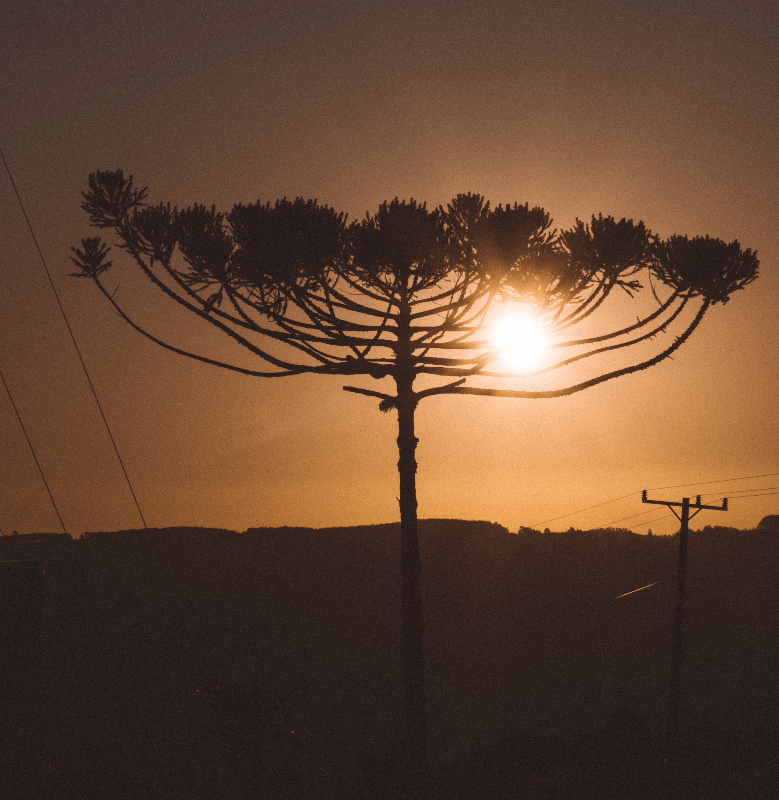

Parques e natureza
Curitiba é conhecida por seus parques urbanos, bosques, jardins e espaços públicos bem aproveitados.
Capital ecológica do Brasil
Um guia visual para conhecer melhor Curitiba, uma cidade marcada por áreas verdes, planejamento urbano, diversidade cultural, gastronomia e atrações para todos os estilos de viagem.

Por que visitar?
A cidade combina natureza, arquitetura, cultura, transporte público organizado e bairros com personalidade.
Curitiba é conhecida por seus parques urbanos, bosques, jardins e espaços públicos bem aproveitados.
Museus, memoriais, teatros, igrejas e construções históricas mostram a diversidade cultural da cidade.
A culinária local mistura influências brasileiras, italianas, polonesas, ucranianas, alemãs e japonesas.
Planeje sua visita
Organizei ideias de passeios para quem tem pouco tempo ou quer explorar a cidade com calma.
Comece pelo Jardim Botânico, visite o Museu Oscar Niemeyer, passe pelo Centro Histórico e finalize o dia na Ópera de Arame ou no Parque Tanguá.
No sábado, explore parques e museus. No domingo, visite a Feira do Largo da Ordem, caminhe pelo Centro Histórico e experimente restaurantes tradicionais.
Inclua Santa Felicidade, cafés especiais, mercados municipais, confeitarias e restaurantes que valorizam ingredientes regionais.
Galeria
Clique em uma imagem para abrir em destaque.
Continue explorando
Veja a história da cidade, principais pontos turísticos, gastronomia e canais de contato para montar uma experiência mais completa.